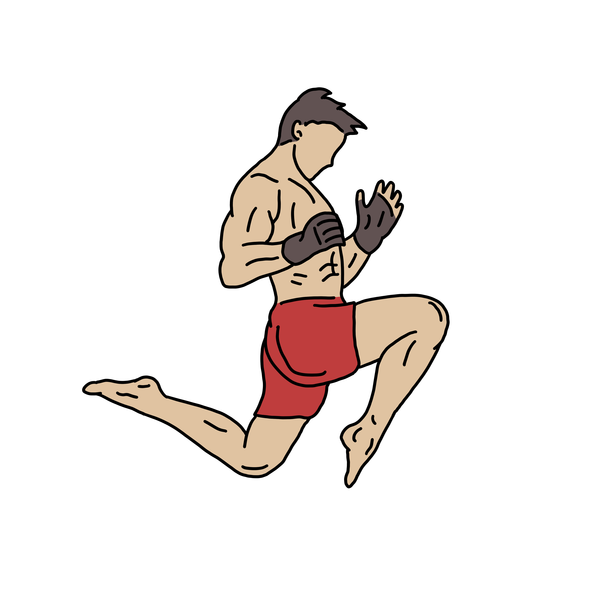

¿Qué es el Muay Thai?
El Muay Thai, también conocido como el "arte de los ocho miembros", es un deporte de combate originario de Tailandia. Se caracteriza por el uso de puños, codos, rodillas y pies, lo que permite a los practicantes golpear a sus oponentes desde diversas posiciones. Este arte marcial combina técnicas de golpeo con clinch, donde los luchadores pueden controlar a su oponente y buscar oportunidades para golpear. El Muay Thai no solo es un deporte de combate, sino también una disciplina cultural que incluye rituales y tradiciones, como el "Wai Kru", que es una ceremonia de respeto hacia los maestros y antepasados. Además, se ha popularizado a nivel mundial, tanto como un deporte competitivo como una forma de ejercicio y autodefensa.
¿Quiénes somos?
"Somos un equipo apasionado de Muay Thai, conocido como "Los Tigres del Muay Thai". Nos dedicamos a promover el arte marcial tailandés, no solo como un deporte, sino como un estilo de vida que fomenta la disciplina, el respeto y la superación personal.Nuestro equipo está formado por practicantes de todos los niveles, desde principiantes hasta competidores experimentados. Entrenamos juntos para mejorar nuestras habilidades, fortalecer nuestro cuerpo y cultivar una mentalidad de lucha. En cada sesión, nos esforzamos por aprender y crecer, apoyándonos mutuamente en cada paso del camino. Participamos en competiciones locales y nacionales, y siempre buscamos representar a nuestra comunidad con honor. Creemos en la importancia de el trabajo en equipo, y estamos comprometidos a crear un ambiente inclusivo y motivador para todos. ¡Únete a nosotros en este emocionante viaje y descubre el poder del Muay Thai!"
Flavio Apolo Montes Gutierrez: Director General de Los Tigres del Muay Thai